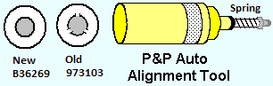

Pick-and-Place Alignment Tool
Description
The pick-and-place auto-alignment tool is a custom-made tool that fits over the pick-and-place collet. It allows the system software to automatically align a pick-and-place to the intersecting devices in the instrument.

Part Number
Part Number B36269 : Used for new-design collets where the ejector tip is round and the internal finger guide in the tool has no slots.
Part Number 973103 : Used for original collets where the ejector has three tabs and the tool has three internal slots in the finger guide that align to the tabs.
Note:
- The two pick-and-place collet versions look similar but are not interchangeable.
- The original tool must be mounted with the internal slots aligned with the fins on the ejector. If the ejector ejects the tool, rotate the tool and then reattach it until the slots are aligned.
Uses
The tool is used on DxI instruments to allow the instrument to automatically align the:
- Sample Pick-and-Place to the
- Sample Storage Wheel
- Supply Carriage
- Reagent Carriage
- Waste Tube
- Incubator Pick-and-Place to the
- Incubator Wheel
- Reagent Carriage
- Wash Carousel (Wash Out)
- Waste Tube
- Wash Pick-and-Place to the
- Incubator Wheel
- Wash Carousel (Wash In)
Instructions for Using
Refer to the P&P: Aligning Pick-and-Place Module procedure.
Calibration
Not Required - Replace if damaged.